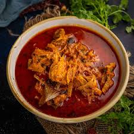
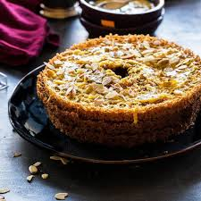
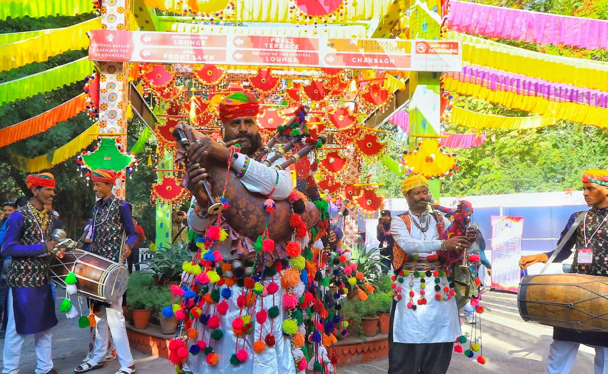

Famous Foods of Jaipur
Dal Baati Churma
A dish consisting of lentils, wheat rolls, and sweet churma.

Laal Maas
A spicy Rajasthani mutton curry made with red chili and spices.

Ghevar
A traditional Rajasthani sweet made with flour, sugar, and ghee.

Must-Visit Locations
- Amber Fort
- City Palace
- Hawa Mahal
- Jantar Mantar
Other Attractions
Literature Festival
A famous literary event held annually in Jaipur, bringing together authors and readers.

Elephant Festival
A vibrant festival that celebrates elephants, with parades and traditional performances.